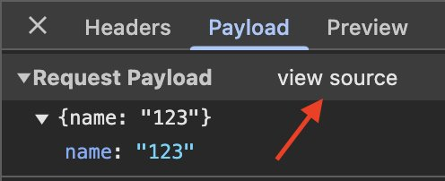
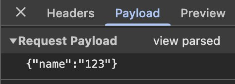

DevTools — основной инструмент при тестировании фронтенда. Открой прямо сейчас!
F12 или Ctrl + Shift + IFn + F12 или Command + Shift + IChrome DevTools — набор инструментов, встроенных в браузер Google Chrome. Позволяют просматривать исходный код сайта, отлаживать HTML, CSS и JavaScript, проверять сетевой трафик, быстродействие и многое другое.
В задании 3 тренажёра начнёшь работать с JSON в DevTools. Обрати внимание:

Parsed (отформатированный) — ключи без кавычек, удобно читать

Source (исходный) — ключи в кавычках, это настоящий JSON-формат
JSON в parsed-формате отображается без кавычек у ключей — это только для удобства чтения. Нажми view source чтобы увидеть реальный JSON с кавычками.
Пройди тренажёр по DevTools:
Нужно проверить валидацию на бэке. Вернись к видео на тайминг 1:22:00: скопируй cURL запроса, подмени в JSON email на невалидный, вставь в командную строку/терминал. Так поверхностно протестируешь валидацию на бэке.
📎 В ответ на ДЗ: скрин с пройденным тренажёром